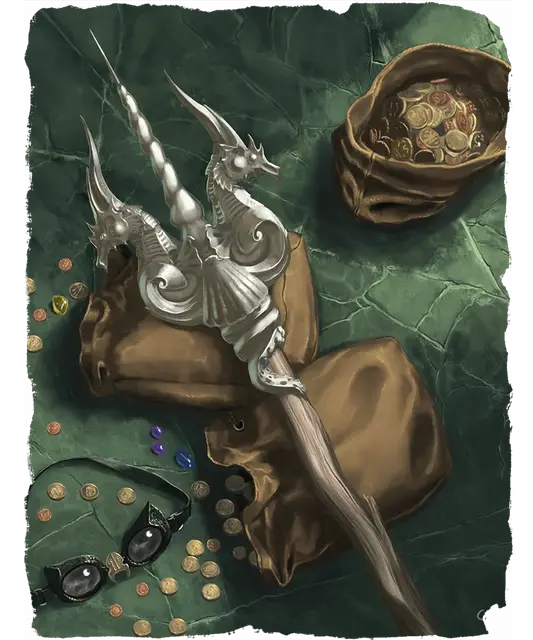

Волна
Wave
Оружие (Трезубец), артефакт (требуется настройка)

Волна, скрытое в подземельях горы Белого Шлейфа оружие, украшена изображениями волн, раковин и морских существ.
Вы получаете бонус +3 к броскам атаки и урона, совершаемым с этим магическим оружием. Когда вы совершаете бросок атаки с этим оружием, и на кости к20 броска выпадает 20, цель получает 21 дополнительного Некротического урона.
Пока вы держите Волну, вы получаете следующие преимущества:
Готовность к бою. Вы совершаете с Преимуществом броски Инициативы.
Адаптация к подводной среде. Когда вы находитесь под водой, вокруг вашей головы образуется пузырь воздуха, позволяя вам дышать так же, как и на воздухе.
Повеление водными существами. У Волны есть 3 заряда, и она восстанавливает 1к3 потраченных зарядов на каждом рассвете. Пока вы несёте оружие, вы можете потратить 1 заряд, чтобы сотворить заклинание Подчинение зверя (Сл спасброска 20) на Зверя, у которого есть Скорость плавания.
Сфера неуязвимости. Пока вы держите Волну, вы можете сотворить с её помощью заклинание Сфера неуязвимости 9-го уровня. Как только это свойство использовано, оно не может быть использовано снова до следующего рассвета.
Разумность. Волна — разумное оружие Нейтрального мировоззрения, с Интеллектом 14, Мудростью 10 и Харизмой 18. Она слышит в пределах 120 футов и обладает Тёмным зрением дальностью 120 футов.
Оружие общается с его носителем телепатически (оно знает Акван).
Личность. Волна страстно призывает смертных поклоняться морским богам и имеет привычку напевать морские песни. Если носитель не способствует достижению целей оружия в мире, возникает конфликт.
Уничтожение Волны. Волна может быть уничтожена только на острове Громовой кузни, где она была создана. Оружие должно быть расплавлено штормовым великаном или кем-то, получившим силу штормового великана. Уничтожение Волны разгневает бога моря, который пошлёт могущественных слуг напасть на остров и наказать уничтожителей.